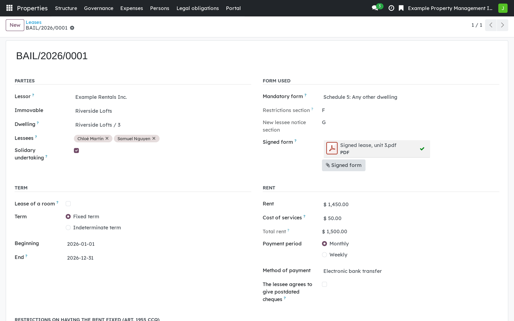
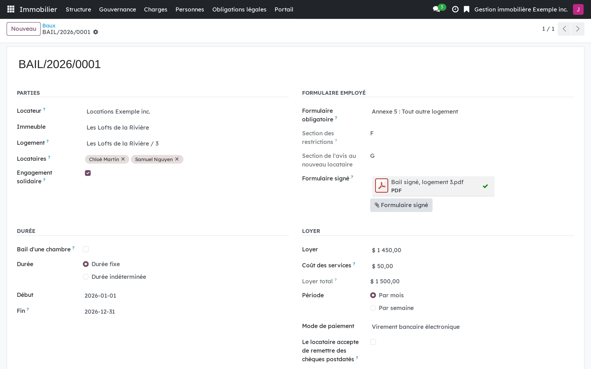

Version française plus bas.
In Québec, a lease of a dwelling is concluded on a mandatory form of the Administrative Housing Tribunal (CQLR, c. T-15.01, r. 3), and every page of those forms is marked "Reproduction interdite". The lessor buys the form from the Tribunal, on paper or as an electronic lease. So this module records what the parties agreed, states which form was used, and keeps the signed form as an attachment. It is the first module of the rental side of the suite, and it adds no field to any co-ownership module.

A lease: the parties, the mandatory form used with the signed copy attached, the term and the rent.
Requires Properties: foundation (bf_property_core) only: a lessor needs
no syndicate. Rental: notices (bf_rental_notice) and Rental: rent and
arrears (bf_rental_rent) build on it, and Rental: lessee portal
(bf_rental_portal) shows the lease to its lessees.
This is software, not legal advice.
Business Source License 1.1. You may use this module in production for your own internal business operations, which include administering immovables that you own or that you are constituted to administer, and letting a person acting on your behalf use your instance for that purpose. Administering immovables for the account of others, or providing the module to third parties as a product or service, whether hosted, managed or resold, requires a separate written agreement with the licensor. Each version converts to LGPL-3.0-or-later on the Change Date stated in the LICENSE file, which sets out the exact terms.
Au Québec, le bail de logement se conclut sur un formulaire obligatoire du Tribunal administratif du logement (RLRQ, c. T-15.01, r. 3), et chaque page de ces formulaires porte la mention « Reproduction interdite ». Le locateur achète son formulaire au Tribunal, sur papier ou en bail électronique. Ce module enregistre donc ce que les parties ont convenu, dit quel formulaire a été employé, et garde le formulaire signé en pièce jointe. C'est le premier module du volet locatif de la suite, et il n'ajoute aucun champ aux modules de copropriété.

Un bail : les parties, le formulaire obligatoire employé avec l'exemplaire signé en pièce jointe, la durée et le loyer.
Exige seulement Immeubles : socle (bf_property_core) : un locateur n'a pas
de syndicat. Locatif : les avis (bf_rental_notice) et Locatif : loyer et
arrérages (bf_rental_rent) s'appuient sur ce module, et Locatif : portail
du locataire (bf_rental_portal) montre le bail à ses locataires.
Ce logiciel ne donne pas d'avis juridique.
Business Source License 1.1. Vous pouvez utiliser ce module en production pour vos propres activités internes, ce qui comprend l'administration des immeubles dont vous êtes propriétaire ou que vous êtes constitué pour administrer, et l'usage de votre instance à cette fin par une personne qui agit pour votre compte. Administrer des immeubles pour le compte d'autrui, ou fournir le module à des tiers comme produit ou service, hébergé, géré ou revendu, exige une entente écrite distincte avec le concédant. Chaque version passe sous LGPL-3.0 ou ultérieure à la date de changement inscrite au fichier LICENSE, qui fait foi.